May 21, 2023
Data and statistical analysis of ABS data based on regional population demographics - gender, age, region (by code, not specified). Comparing regions by summary statistics and looking at distributions to understand whether normal or not. And then using the binomial distribution to help predict event attendnace numbers.
At this stage of my course I was feeling comfortably with R, the main thing was more to understand the statistical and distribution theory. It was an interesting analysis to do as with relatively little context accompanying the data, trying to come up with rationale for the trends and observations based only on looking at the data and the resultant statistics, it is possible to find more than one might initially think!
library(readr)
library(dplyr)
library(tidyr)
library(ggplot2)
library(scales)
library(magrittr)
library(here)
library(knitr)
library(forcats)df <- read_csv(here("pop_dataset_0002.csv"), show_col_types = FALSE) %>% as_tibble()Check structure, values, data types to understand the data’s shape and nature, and investigate for errors, inconsistencies, missing values and potential issues to address prior to the analysis process.
df %>% head()## # A tibble: 6 × 4
## region age gender population
## <chr> <dbl> <chr> <dbl>
## 1 SSC21184 0 M 114
## 2 SSC21184 0 F 95
## 3 SSC21184 1 M 88
## 4 SSC21184 1 F 107
## 5 SSC21184 2 M 122
## 6 SSC21184 2 F 120Unique variables
All unique values were originally generated for investigation, though for purposes of this report, only up to the first 10 values are being shown.
# Generate unique values and view first 10
unique_vals <- df %>% lapply(unique) %>% lapply(head, 10)
# View variables
unique_vals## $region
## [1] "SSC21184" "SSC20858" "SSC20503" "SSC20477" "SSC20330" "SSC21660"
## [7] "SSC22396" "SSC20837" "SSC22373" "SSC20579"
##
## $age
## [1] 0 1 2 3 4 5 6 7 8 9
##
## $gender
## [1] "M" "F"
##
## $population
## [1] 114 95 88 107 122 120 123 125 117 140Convert character data types to factors
df$region %<>% as.factor()
df$gender %<>% as.factor()Summary and structure
df %>% select(c("age", "population")) %>% summary()## age population
## Min. : 0.00 Min. : 0.00
## 1st Qu.:13.75 1st Qu.: 0.00
## Median :27.50 Median : 0.00
## Mean :27.50 Mean : 14.21
## 3rd Qu.:41.25 3rd Qu.: 7.00
## Max. :55.00 Max. :726.00df %>% str()## tibble [56,000 × 4] (S3: tbl_df/tbl/data.frame)
## $ region : Factor w/ 500 levels "SSC20005","SSC20012",..: 193 193 193 193 193 193 193 193 193 193 ...
## $ age : num [1:56000] 0 0 1 1 2 2 3 3 4 4 ...
## $ gender : Factor w/ 2 levels "F","M": 2 1 2 1 2 1 2 1 2 1 ...
## $ population: num [1:56000] 114 95 88 107 122 120 123 125 114 117 ...Head of dataset
df %>% head()## # A tibble: 6 × 4
## region age gender population
## <fct> <dbl> <fct> <dbl>
## 1 SSC21184 0 M 114
## 2 SSC21184 0 F 95
## 3 SSC21184 1 M 88
## 4 SSC21184 1 F 107
## 5 SSC21184 2 M 122
## 6 SSC21184 2 F 120Missing values
# Check for NA values
colSums(is.na(df))## region age gender population
## 0 0 0 0Summary - the dataset contains
First it is necessary convert the dataset to Tidy format - in its
current form, the population values are actually multiple
observations and values combined. This will make it easier to work with
for analysis and visualisation.
Using the tidyr function, uncount(), this breaks down
the population values so each row will be a single
observation (each person) with one value for each of three variables:
region, gender and age.
df_uncount <- df %>% uncount(weights = population)region_mean_age <- df_uncount$age %>% mean()
region_mean_age## [1] 27.80027The mean age of all people in the dataset is: 27.8
region_stand_dev <- df_uncount$age %>% sd()
region_stand_dev## [1] 15.77805The standard deviation for age of all people in the data set is: 15.78
For this task, the mean age for each region will be calculated to create a new dataset.
# Calculate mean age for each region - arrange by region code
region_means <- df_uncount %>%
group_by(region) %>%
summarise(mean_age = mean(age)) %>%
arrange(region)
# View first 5 rows
region_means %>% head(5)## # A tibble: 5 × 2
## region mean_age
## <fct> <dbl>
## 1 SSC20005 30.5
## 2 SSC20012 30.1
## 3 SSC20018 32.8
## 4 SSC20027 27.9
## 5 SSC20029 21.4
region_summary <- region_means %>%
summarise(Mean = mean(mean_age),
`Standard deviation` = sd(mean_age),
Minimum = min(mean_age),
`First quartile` = quantile(mean_age, probs = 0.25),
Median = median(mean_age),
`Third quartile` = quantile(mean_age,probs = 0.75),
Maximum = max(mean_age),
`Interquartile range` = IQR(mean_age))
region_summary## # A tibble: 1 × 8
## Mean `Standard deviation` Minimum `First quartile` Median `Third quartile`
## <dbl> <dbl> <dbl> <dbl> <dbl> <dbl>
## 1 30.6 8.00 2 27.4 29.2 33.4
## # ℹ 2 more variables: Maximum <dbl>, `Interquartile range` <dbl>region_summary %>% t() %>%
kable(caption = "Summary statistics for region means", align = "lc", digits = 2)| Mean | 30.61 |
| Standard deviation | 8.00 |
| Minimum | 2.00 |
| First quartile | 27.43 |
| Median | 29.23 |
| Third quartile | 33.35 |
| Maximum | 55.00 |
| Interquartile range | 5.92 |
region_means %>%
ggplot() +
geom_histogram(aes(mean_age), bins = 11, color = "white", fill = "steelblue") +
labs(x = "Region Mean Age", y = 'Frequency', title = "Histogram of region means - frequency")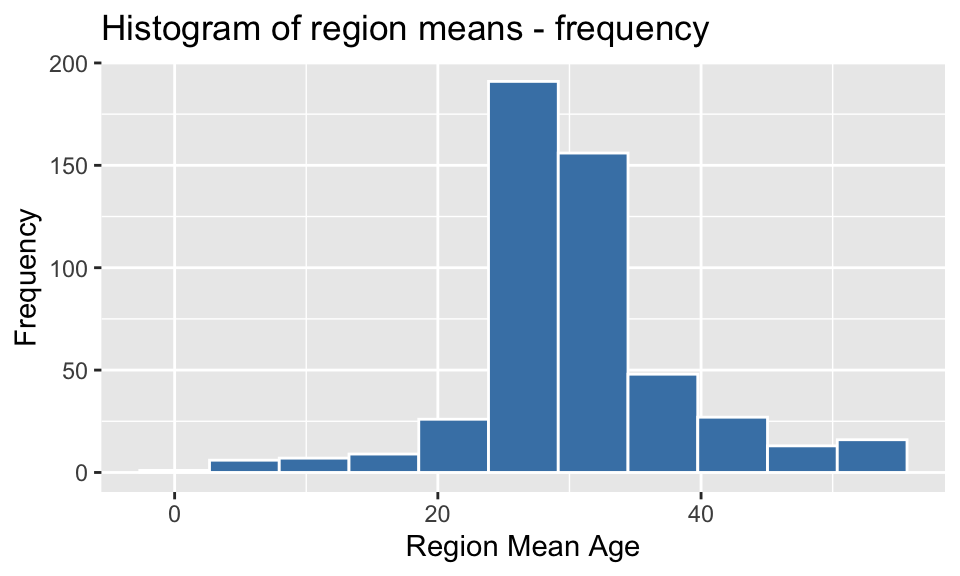
region_means %>% ggplot() +
geom_histogram(aes(x = mean_age, y = after_stat(density)), bins=11, color = "white", fill = "steelblue") +
labs(title = "Histogram of region means - percentage", x = "Mean Age", y = "Percentage") +
scale_y_continuous(labels = percent) +
scale_x_continuous(breaks = seq(0,55,10)) 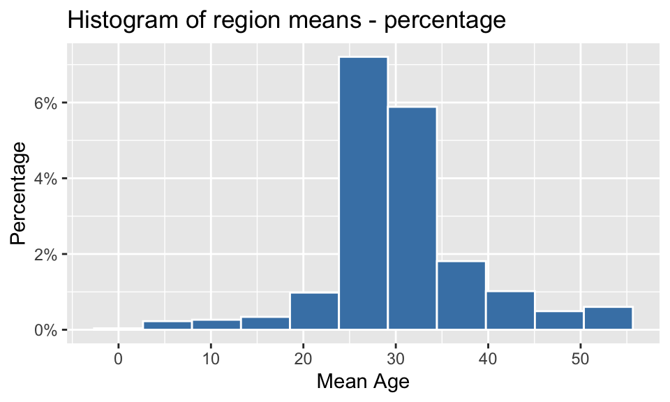
In considering whether the distribution of the region means exhibits the characteristics of a normal distribution, there are several factors that will be checked:
plot_region_means <- region_means %>%
ggplot() +
geom_histogram(aes(mean_age), bins = 11, color = "white", fill = "steelblue") +
labs(x = "Region Mean Age", y = 'Frequency', title = "Histogram of region means") +
scale_x_continuous(breaks = seq(0,55,10)) +
geom_vline(aes(xintercept = mean(mean_age)), alpha = 0.6, color = 'red', linetype = 'dashed', size = 0.4)
plot_region_means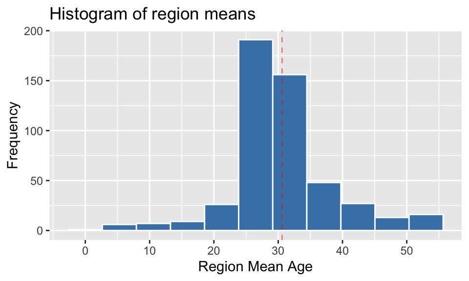
Observation 1: From this histogram, it can be seen that the distribution of the region means is not symmetrical about the mean, nor is it a symmetrical bell shape. It is slightly right-skewed, with long tails on either side of the middle.
region_means %>%
ggplot(aes(sample = mean_age)) +
stat_qq(color = "steelblue3", alpha=0.6) +
stat_qq_line(color="red", alpha=0.6) +
labs(x = 'Theoretical quantiles', y = 'Sample quantiles',
title = 'Q-Q Plot for Region means')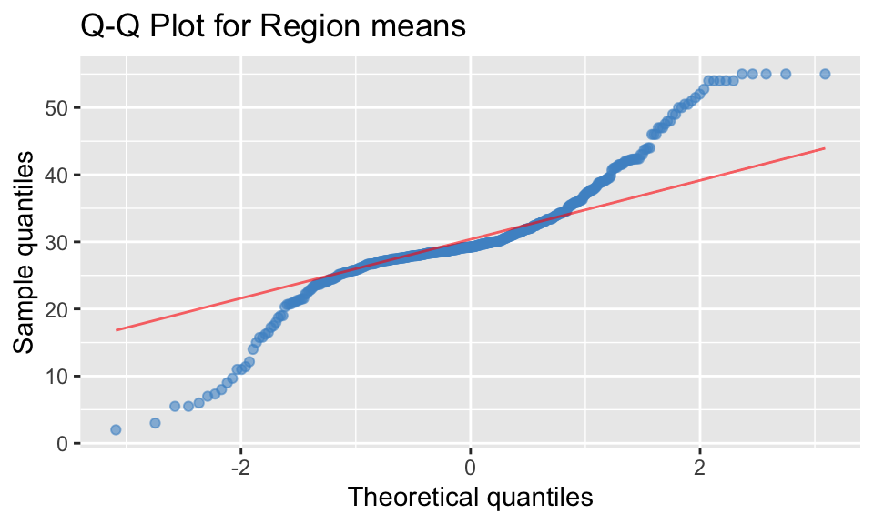
Observation 2: To be considered as a normal distribution, in a QQ plot the data points (blue) should match the theoretical line (red), which would indicate the sample and theoretical quantiles align. From the plot above, it can be seen that the data points do not match and are not in a straight line, indicating the region means are not normally distributed.
sw_results <- shapiro.test(region_means$mean_age)
sw_results##
## Shapiro-Wilk normality test
##
## data: region_means$mean_age
## W = 0.90793, p-value < 2.2e-16sw_results$p.value## [1] 7.757325e-17Observation 3: The p-value calculated by the Shapiro-Wilks test is 0.000000000000000078, which is much less than 0.05, indicating that the data is not normally distributed.
From visual investigation and statistical testing of the data, the region means do not exhibit the characteristic shape of a normal distribution.
region_population <- df_uncount %>%
group_by(region) %>%
summarise(population = n()) %>%
arrange(desc(population))
region_population %>% head(5)## # A tibble: 5 × 2
## region population
## <fct> <int>
## 1 SSC22015 37948
## 2 SSC21671 22979
## 3 SSC21125 20939
## 4 SSC20911 19340
## 5 SSC22569 19274region_mean_pop <- region_population %>% mean(population)
# Set parameters to highlight region with largest population, with annotation
highlight <- region_population[1,]
region_max_code <-as.character(region_population[[1, "region"]])
annotation <- data.frame(x=13, y=region_population[[1,2]], label=region_max_code)
# Plot to show Top 100 Regions by population
region_population[1:100,] %>%
mutate(region = fct_reorder(region, desc(population))) %>%
ggplot(aes(x = region, y = population)) +
geom_bar(stat = "identity", colour="white", fill = "steelblue", alpha = 0.5) +
geom_bar(data = highlight, aes(x = region, y = population), stat="identity", colour="white", fill = "steelblue") +
scale_x_discrete(labels = NULL) +
labs(x="Region", y="Population", title=paste("Top 100 Regions by Population")) +
geom_text(data=annotation, aes( x=x, y=y-4000, label=label), size=3) +
annotate("segment", x = 7, xend = 3, y = annotation$y-4200, yend = annotation$y - 4200, color = "grey60", size=0.5, arrow=arrow(angle = 30, length = unit(0.1, "cm"), type = "closed")) +
geom_hline(data = region_population, aes(yintercept = mean(population)), alpha = 0.6, color = "red", linetype = "dashed", size = 0.4) +
theme(panel.background = element_rect(NA), axis.ticks = element_blank())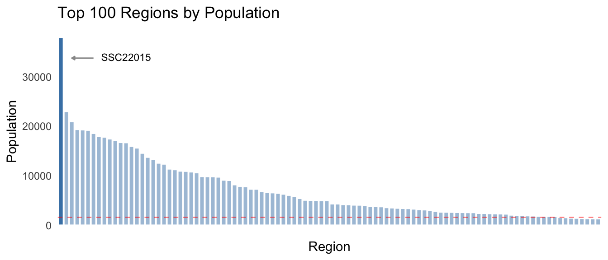 As can be seen in the chart above, there is a wide range of population values across the first 20% of the 500 regions, with the remaining 80% forming a long flat tail. The mean population is 1592.03, though the median is 81, also indicating the distribution is highly skewed.
The region with the largest population is SSC22015, with a total of 37948. This region could well be considered an outlier as it is 23.84 times greater than the mean population for all regions, and 65.14% greater than the second largest region.
pop_largest <- df_uncount %>%
filter(region == region_max_code)largest_region_summary <- pop_largest %>%
summarise(Mean = mean(age),
`Standard deviation` = sd(age),
Minimum = min(age),
`First quartile` = quantile(age, probs = 0.25),
Median = median(age),
`Third quartile` = quantile(age,probs = 0.75),
Maximum = max(age),
`Interquartile range` = IQR(age))
largest_region_summary## # A tibble: 1 × 8
## Mean `Standard deviation` Minimum `First quartile` Median `Third quartile`
## <dbl> <dbl> <dbl> <dbl> <dbl> <dbl>
## 1 25.5 15.9 0 11 26 38
## # ℹ 2 more variables: Maximum <dbl>, `Interquartile range` <dbl>largest_region_summary %>% t() %>%
kable(caption = paste("Summary statistics for region", region_max_code), align = "lc", digits = 2)| Mean | 25.52 |
| Standard deviation | 15.90 |
| Minimum | 0.00 |
| First quartile | 11.00 |
| Median | 26.00 |
| Third quartile | 38.00 |
| Maximum | 55.00 |
| Interquartile range | 27.00 |
plot_largest_region <- pop_largest %>% ggplot() +
geom_histogram(aes(age), bins = 11, color = "white", fill = "steelblue") +
labs(x = "Age", y = "Frequency", title = paste("Histogram of age in", region_max_code)) + scale_x_continuous(breaks = seq(0,55,10)) +
geom_vline(aes(xintercept = mean(age)), alpha = 0.6, color = "red", linetype = "dashed", size = 0.4)
plot_largest_region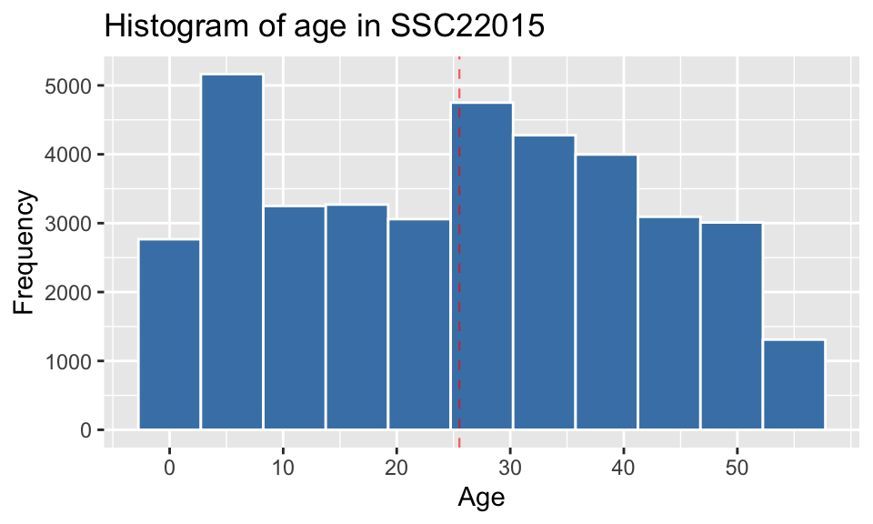
# Combine summary stats
sum_stats <- data.frame(cbind(t(largest_region_summary), t(region_summary)))
# View table of summary stats for comparison
sum_stats %>% kable(align = "lll", digits = 2, col.names = c(region_max_code, "All regions"))| SSC22015 | All regions | |
|---|---|---|
| Mean | 25.52 | 30.61 |
| Standard deviation | 15.90 | 8.00 |
| Minimum | 0.00 | 2.00 |
| First quartile | 11.00 | 27.43 |
| Median | 26.00 | 29.23 |
| Third quartile | 38.00 | 33.35 |
| Maximum | 55.00 | 55.00 |
| Interquartile range | 27.00 | 5.92 |
There are significant differences between the two distributions, despite the range being similar.
These differences are borne out when looking at visualisations of the two distributions side-by-side (below). The reason is that they represent different things - the distribution of ages within a specific region shows the frequency across the entire age range, whereas the region means are by definition, an indication of the central value within each region.
ggpubr::ggarrange(plot_largest_region, plot_region_means, ncol = 2, nrow=1)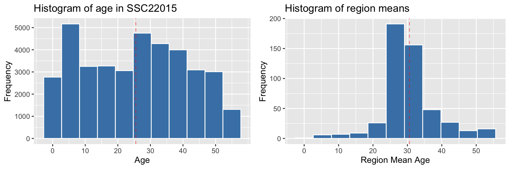
pop_largest %>% filter(gender == "M") %>%
ggplot() +
geom_histogram(aes(x = age), color = "white", alpha = 0.9, fill = "steelblue", bins=11) +
scale_x_continuous(breaks = seq(0,55,10)) +
labs(x = "Age", y = "Frequency", title = paste("Histogram of age in", region_max_code,"- Male"))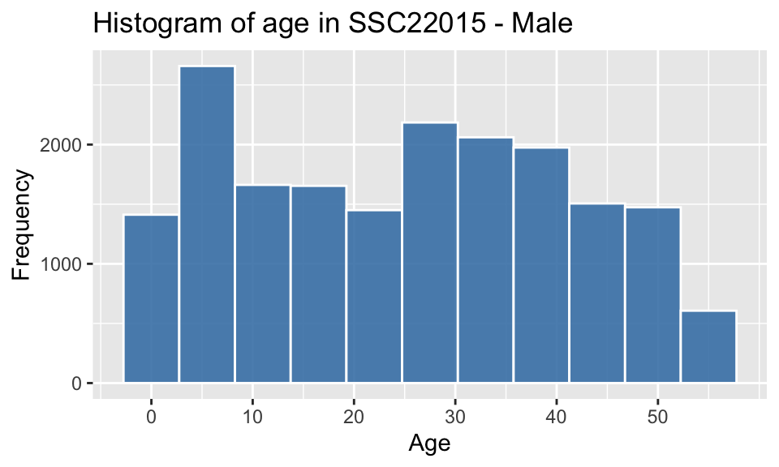
pop_largest %>% filter(gender == "F") %>%
ggplot(aes(x = age)) +
geom_histogram(color = "white", alpha = 0.8, fill = "coral1", bins=11) +
scale_x_continuous(breaks = seq(0,55,10)) +
labs(x = "Age", y = "Frequency", title = paste("Histogram of age in", region_max_code,"- Female"))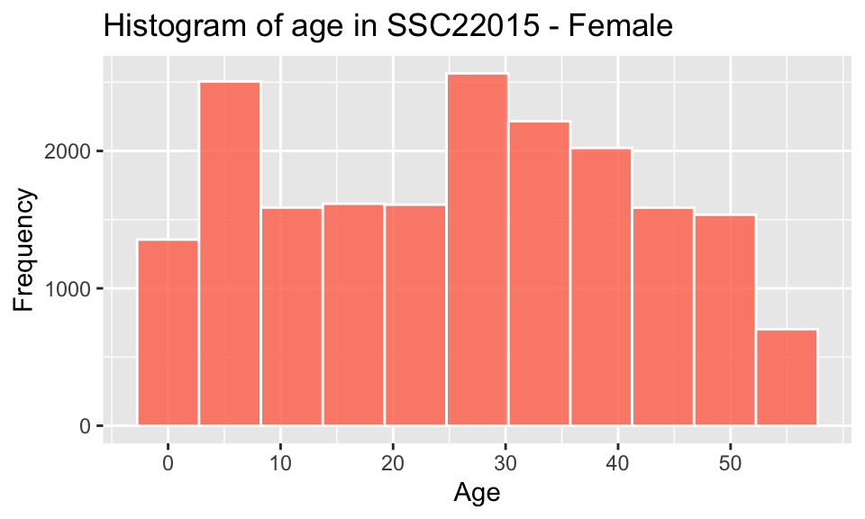
pop_largest %>%
ggplot(aes(x = age)) +
geom_histogram(color = "white", fill = "steelblue", bins=11) +
labs(x = "Age", y = "Frequency", title = "Histogram of Age - by Gender") +
scale_x_continuous(breaks = seq(0,55,10)) +
facet_wrap(~gender, labeller = labeller(gender = c("F" = "Female", "M" ="Male")))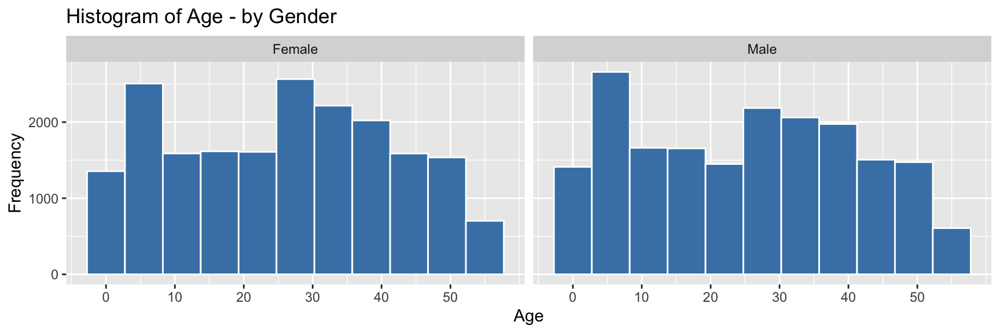
pop_largest %>%
ggplot(mapping = aes(x = age, fill = gender), ) +
geom_histogram(bins=11, alpha=0.6, position = "identity", color = "white") +
scale_x_continuous(breaks = seq(0,55,10)) +
scale_fill_manual(values = c("coral2", "steelblue3")) +
labs(x = "Age", y = "Frequency", title = "Histogram of Age - comparing Gender")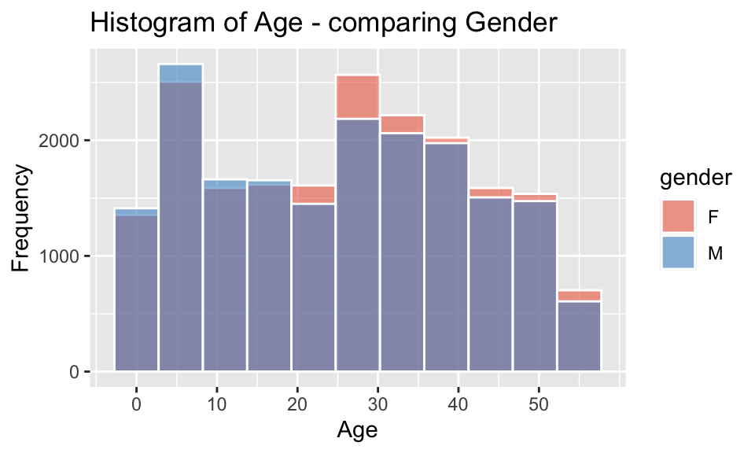
The individual and combined histograms above show that while similar in overall shape and size, there are discernible differences.
The observed bias towards males in childhood shifting to females in adulthood reflects the trends shown in worldwide data, such as outlined by Ritchie and Roser (2019), which states “the sex ratio – the number of males relative to females – at birth and in childhood are male-biased in almost every country”, though “as we move through adulthood we see that this ratio is lower and lower.”
Though in this case, there is a significant higher female-biased difference in the sex ratio between the ages of 21-37. Further data would be required to understand the reason for this, but factors could include gender-biased employment and education opportunities, services, mortality rate of males (young drivers), cultural/family/community networks and/or housing affordability.
# Add factor for age group- older/younger
df_groups <- df_uncount %>%
mutate(age_group = factor(case_when(
age < 40 ~ "Younger",
age >= 40 ~ "Older"
)))# Generate ratios for older/younger age groups by region
region_age_stats <- df_groups %>%
group_by(region) %>%
summarise(population = n(),
older = sum(age_group == "Older"),
younger = sum(age_group == "Younger"),
ratio_older_to_younger = older/younger)
# View first 6 rows
region_age_stats %>% head()## # A tibble: 6 × 5
## region population older younger ratio_older_to_younger
## <fct> <int> <int> <int> <dbl>
## 1 SSC20005 33 17 16 1.06
## 2 SSC20012 425 178 247 0.721
## 3 SSC20018 100 50 50 1
## 4 SSC20027 1137 371 766 0.484
## 5 SSC20029 51 12 39 0.308
## 6 SSC20048 924 316 608 0.520# Create plot ratio older/younger vs population
region_age_stats %>%
ggplot(aes(x = population, y = ratio_older_to_younger)) +
geom_point(alpha=0.3) +
geom_hline(aes(yintercept = 1), alpha = 0.6, color = 'red', linetype = 'dashed', size = 0.4) +
labs(x = "Population", y = "Ratio", title = "Ratio of Older/Younger per Region by Population size")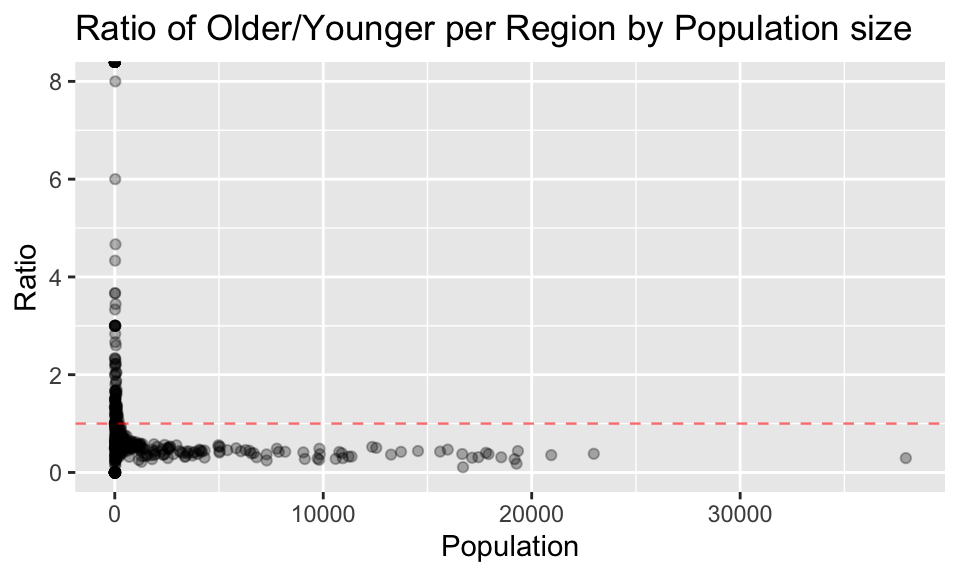
# Create plot ratio for populations under 250
plot_less_250 <- region_age_stats %>% filter (population < 200) %>%
ggplot(aes(x = population, y = ratio_older_to_younger)) +
geom_point(alpha=0.4) +
geom_hline(aes(yintercept = 1), alpha = 0.6, color = 'red', linetype = 'dashed', size = 0.4) +
labs(x = "Population", y = "Ratio", title = "Ratio of Older/Younger per Region by Population - under 250")# Create plot ratio for populations 250 and over
plot_over_250 <- region_age_stats %>%
filter (population >= 200) %>%
ggplot(aes(x = population, y = ratio_older_to_younger)) +
geom_point(alpha=0.4) +
geom_hline(aes(yintercept = 1), alpha = 0.6, color = 'red', linetype = 'dashed', size = 0.4) +
labs(x = "Population", y = "Ratio", title = "Ratio of Older/Younger per Region by Population - 250 and over")
# View plots
ggpubr::ggarrange(plot_less_250, plot_over_250, ncol = 2, nrow=1)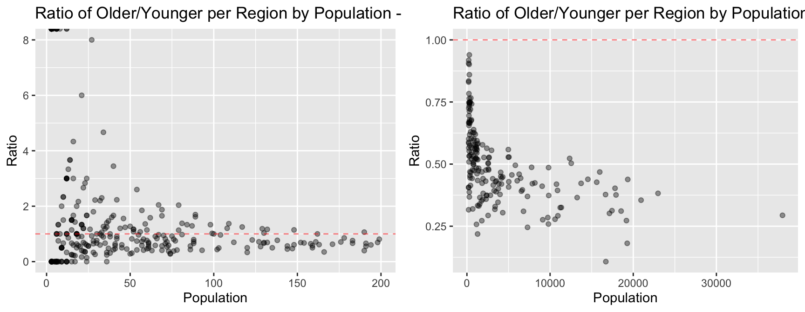
region_gender_stats <- df_groups %>% group_by(region) %>%
summarise(population = n(),
female = sum(gender == "F"),
male = sum(gender == "M"),
ratio_male_to_female = male/female)
region_gender_stats %>% head(5)## # A tibble: 5 × 5
## region population female male ratio_male_to_female
## <fct> <int> <int> <int> <dbl>
## 1 SSC20005 33 20 13 0.65
## 2 SSC20012 425 208 217 1.04
## 3 SSC20018 100 40 60 1.5
## 4 SSC20027 1137 538 599 1.11
## 5 SSC20029 51 21 30 1.43region_gender_stats %>% ggplot(aes(x = population, y = ratio_male_to_female)) +
geom_point(alpha=0.3) +
geom_hline(aes(yintercept = 1), alpha = 0.6, color = 'red', linetype = 'dashed', size = 0.4) +
labs(x = "Population", y = "Ratio", title = "Ratio of Gender per Region by Population size")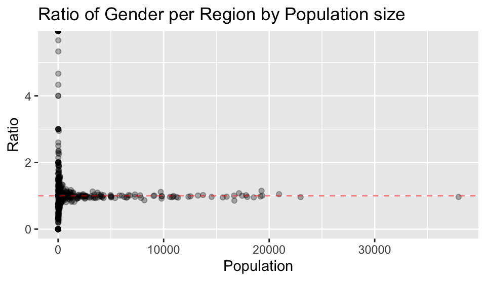
From the plot above, the general trends on gender observed are:
Explanations for these trends on gender could be:
Selection for target market:
The choice for this market is to establish brand awareness in a cohort that are likely to be engaged in social and physical activities, forming habits that may be long-lasting, and to benefit from increasing female-bias in population as age increases.
The preferred regions will have the largest population of females for the target age bracket. Let’s look at the top 5 regions based on that criteria.
# Get top 2 regions by filtering on selection criteria (age and gender)
top_5_regions <-
df_groups %>%
group_by(region) %>%
filter(age >= 18 & age < 23) %>%
summarise(population = n(),
female = sum(gender == "F"),
male = sum(gender == "M"),
ratio_male_to_female = male/female) %>%
arrange(desc(population)) %>% head(5)
top_5_regions## # A tibble: 5 × 5
## region population female male ratio_male_to_female
## <fct> <int> <int> <int> <dbl>
## 1 SSC20492 5529 3218 2311 0.718
## 2 SSC22015 2816 1453 1363 0.938
## 3 SSC21143 2432 1176 1256 1.07
## 4 SSC21125 2047 915 1132 1.24
## 5 SSC21671 1995 976 1019 1.04The two regions that will be targeted are:
These two regions have been selected as they have the largest female populations for the selected age group, 3218 and 1453 respectively.
An unexpected bonus is that the gender ratio of the target age bracket is in favour of females in both regions, which may help potential flow-on to the general population.
Task exercise: In planning each region’s campaign launch, you believe that 15% of your primary target market in the region will attend the launch. Use this assumption to estimate the number of the primary target market that you expect to attend in each region. Also estimate the likelihood that at least 30% of the primary target market will attend in each region. Explain your reasoning for both estimates.
Calculating expected attendance for each region
# Calculate expected attendance based on 15% attendance
target <- top_5_regions %>%
select("region", "female") %>%
rename(target_population = female) %>%
mutate(expected_attendance = round(target_population * 0.15),
double_attendance = round(target_population * 0.3)) %>%
arrange(desc(target_population)) %>% head(2)
target## # A tibble: 2 × 4
## region target_population expected_attendance double_attendance
## <fct> <int> <dbl> <dbl>
## 1 SSC20492 3218 483 965
## 2 SSC22015 1453 218 436Expected attendance numbers for each region calculated at 15% of the total number of females in the target age bracket:
Calculating probability of 30% attendance for each region
To calculate the possibility of achieving 30% attendance of the target population, a binomial distribution will be used to estimate this likelihood.
The binomial distribution has been selected based on there being:
# Probability - 15%
p <- 0.15
# Region 1 parameters
target_region1 <- target$double_attendance[1]
n1 <- target$target_population[1]
# Calculate Region 1 probability
p_region1 <- pbinom(target_region1, size = n1, prob = p, lower.tail = FALSE)
# Region 2 parameters
target_region2 <- target$double_attendance[2]
n2 <- target$target_population[2]
# Calculate Region 1 probability
p_region2 <- pbinom(target_region2, size = n2, prob = p, lower.tail = FALSE)# Probability of achieving 30% attendance in Region 1
p_region1 ## [1] 3.243292e-103# Probability of achieving 30% attendance in Region 2
p_region2## [1] 5.073508e-48The probability of achieving 30% attendance in either region is close to 0% in both cases.
Given the premise of expecting only 15% success from the expected number of trials of a yes/no outcome, achieving the expected outcome is a 50% probability. To double the attendance to 30% would require double the expected number of successes, which is more than the 15% probability rate allows for - hence the negligible likelihood of doing so.
ABS (Australian Bureau of Statistics) (2018) FEATURE ARTICLE 2: SPOTLIGHT ON NET OVERSEAS MIGRATION, ABS website, accessed 17 May 2023. https://www.abs.gov.au/ausstats/abs@.nsf/featurearticlesbyCatalogue/7A40A407211F35F4CA257A2200120EAA
cmdlinetips (9 May 2019) How To Highlight Select Data Points with ggplot2 in R?, Python and R Tips website, accessed 21 May 2023. https://cmdlinetips.com/2019/05/how-to-highlight-select-data-points-with-ggplot2-in-r/
Dragićević M (19 February 2018) changing ggplot2::facet_wrap title from the default, Stack Overflow website, accessed 20 May 2023. https://stackoverflow.com/questions/48860158/changing-ggplot2facet-wrap-title-from-the-default
Holtz Y (2018) Histogram with several groups - ggplot2, The R Graph Gallery website, accessed 18 May 2023. https://r-graph-gallery.com/histogram_several_group.html
Hyndman R (2 December 2017) NOTE or WARNING from package check when README.md includes images, Stack Overflow website, accessed 19 May 2023. https://stackoverflow.com/questions/44113759/note-or-warning-from-package-check-when-readme-md-includes-images
Kassambara A (1 September 2017) ggplot2 - Easy Way to Mix Multiple Graphs on The Same Page, STHDA (Statistical tools for high-throughput data analysis) website, accessed 20 May 2023. http://www.sthda.com/english/articles/24-ggpubr-publication-ready-plots/81-ggplot2-easy-way-to-mix-multiple-graphs-on-the-same-page
Kassambara A (n.d.) ggplot2 axis ticks : A guide to customize tick marks and labels, STHDA, accessed 19 May 2023. http://www.sthda.com/english/wiki/ggplot2-axis-ticks-a-guide-to-customize-tick-marks-and-labels
Ritchie H and Roser M (2019) Gender Ratio, Our World in Data website, accessed 17 May 2023. https://ourworldindata.org/gender-ratio
Schork J (n.d.) Draw Histogram with Percentages Instead of Frequency Counts in Base R, Statistics Globe website, accessed 19 May 2023. https://statisticsglobe.com/draw-histogram-with-percentages-in-base-r
Wickham H (2016) Histograms and frequency polygons, ggplot2 website, accessed 19 May 2023. https://ggplot2.tidyverse.org/reference/geom_histogram.html#computed-variables
Yihue X, Dervieux C and Riederer E (2022) 10.1 The function knitr::kable(), R Markdown Cookbook website, accessed 19 May 2023. https://bookdown.org/yihui/rmarkdown-cookbook/kable.html
R packages
Müller K (2020) here: A Simpler Way to Find Your Files, R package version 1.0.1. https://CRAN.R-project.org/package=here
Bache S, Wickham H (2022) magrittr: A Forward-Pipe Operator for R, R package version 2.0.3. https://CRAN.R-project.org/package=magrittr
Wickham H (2023) forcats: Tools for Working with Categorical Variables (Factors) R package version 1.0.0. https://CRAN.R-project.org/package=forcats
Wickham H. (2016) ggplot2: Elegant Graphics for Data Analysis, Springer-Verlag New York.
Wickham H, François R, Henry L, Müller K, Vaughan D (2023) dplyr: A Grammar of Data Manipulation, R package version 1.1.0. https://CRAN.R-project.org/package=dplyr
Wickham H, Hester J, Bryan J (2023) readr: Read Rectangular Text Data, R package version 2.1.4. https://CRAN.R-project.org/package=readr
Wickham H, Seidel D (2022). scales: Scale Functions for Visualization. R package version 1.2.1. https://CRAN.R-project.org/package=scales.
Wickham H, Vaughan D, Girlich M (2023) tidyr: Tidy Messy Data, R package version 1.3.0. https://CRAN.R-project.org/package=tidyr
Yihui X (2023) knitr: A General-Purpose Package for Dynamic Report Generation in R, R package version 1.42.
Copyright © 2025 Adam Simmons, Inc. All rights reserved.
4.3 Comment on any trends you see in the data. What could explain such trends?
From the plots above, the general trends about age groups observed are:
Explanations for these trends for more young people in regions of larger population could be: